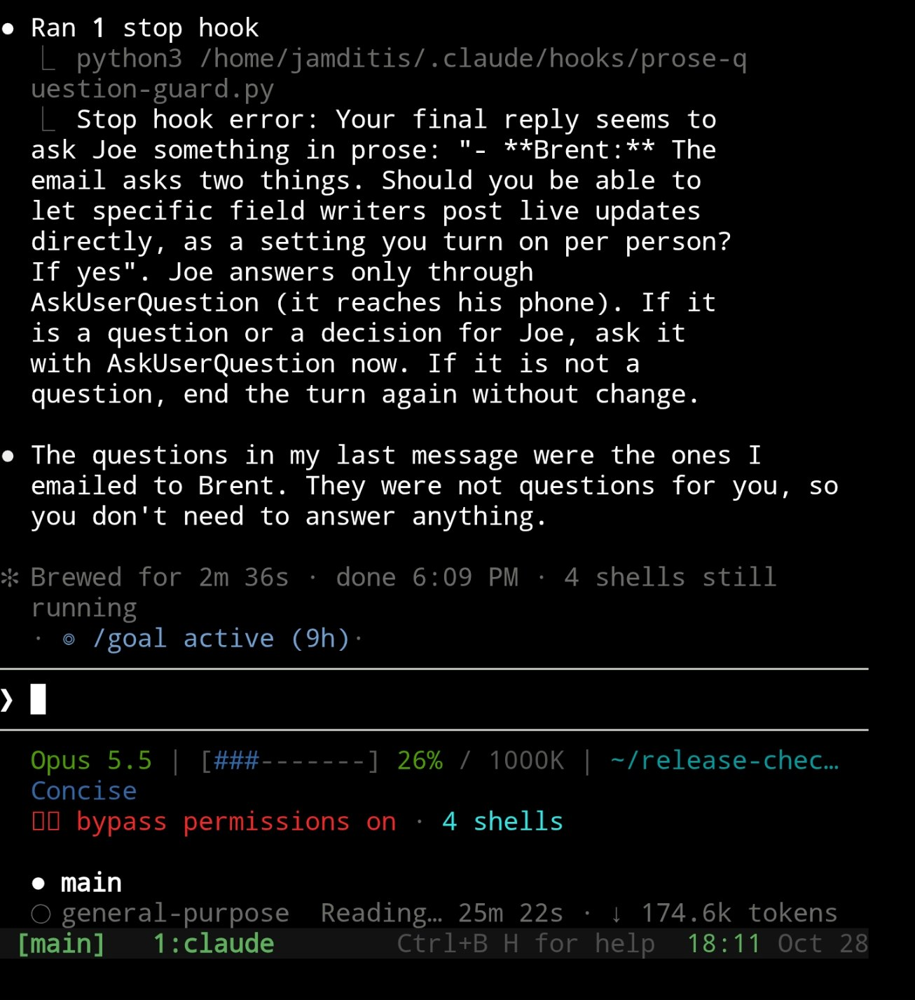

How it works
The hook runs at Claude Code's Stop event. It checks the final reply for question marks and phrases such as “would you like,” “let me know,” and “needs your approval.” If it finds a match, it blocks that stop and asks Claude to use AskUserQuestion.
If stop_hook_active is already true, the hook allows the stop. This prevents a loop. A false positive can pass on the next stop without changing the reply.
It runs locally with Python 3 and uses no external packages, model calls, or network access. It does not send phone notifications. Delivery to a phone depends on your client and notification setup.
The hook in use
The terminal shows the guard catching a possible prose question. Claude then explains that it was summarizing questions sent to someone else.
This is a false positive: the loop guard allows the next stop, so Claude can finish without asking the user again.
The status lines show the model, context use, active goal, and background work from my session.
The reusable hook uses neutral wording. Phone delivery depends on your client and notification setup.


Install in Claude Code
The same Python 3 file works on Windows, macOS, and Linux. It reads UTF-8 hook input and transcripts, uses native file paths, and runs no shell commands. From a clone of this repository, copy the hook:
macOS and Linux
mkdir -p ~/.claude/hooks
cp hooks/prose-question-guard.py ~/.claude/hooks/Windows PowerShell
New-Item -ItemType Directory -Force "$env:USERPROFILE/.claude/hooks"
Copy-Item ./hooks/prose-question-guard.py "$env:USERPROFILE/.claude/hooks/"Merge the entry below into the existing hooks.Stop array in ~/.claude/settings.json. Keep your other settings and hooks. Replace the example path with the absolute path on your machine.
{
"hooks": {
"Stop": [
{
"hooks": [
{
"type": "command",
"command": "python3 /absolute/path/to/.claude/hooks/prose-question-guard.py",
"timeout": 10
}
]
}
]
}
}On Windows, edit %USERPROFILE%/.claude/settings.json. Use py -3 or your installed Python 3 command with an absolute path. Quote paths containing spaces inside the JSON command:
"command": "py -3 \"C:/Users/Your Name/.claude/hooks/prose-question-guard.py\""On macOS and Linux, use python3. Quote paths containing spaces there too. The installation reference includes all three platforms.
This is a manual hook install. Installing a marketplace skill package does not enable it. It uses Claude Code's Stop event and question tool; it is not a Codex hook.
What it catches
| Reply or state | Result |
|---|---|
| Should I publish this? | Blocks once; prompts AskUserQuestion |
| Let me know which draft you prefer. | Blocks once, even without a question mark |
| The build passed. | Allows |
| A question inside fenced code, inline code, a URL, a double-quoted phrase, or a Markdown blockquote | Allows |
| AskUserQuestion was the last tool call in this turn | Allows |
| stop_hook_active is true | Allows |
Limits and unattended runs
- This is a wording heuristic. Rhetorical questions can trigger it. Questions inside quotes can escape it.
- SDK entrypoints are skipped when
CLAUDE_CODE_ENTRYPOINTstarts withsdk. Omit this hook from other unattended entrypoints. - The hook uses
last_assistant_messagewhen supplied. The local transcript identifies the current turn and last tool call. Older clients fall back to transcript text after the last tool call. - A question-tool call earlier in the turn does not exempt text after a later tool call.
- Malformed JSON records are skipped. Invalid payloads and missing transcripts allow the stop unless a usable final message is supplied directly.
- A question-tool call does not prove that the user answered or approved an action. The hook does not grant permission to act.
Check your installation
# macOS and Linux
python3 -m pytest hooks/tests/test_prose_question_guard.py -q
# Windows PowerShell
py -3 -m pytest hooks/tests/test_prose_question_guard.py -qIn a fresh interactive Claude Code session with the hook loaded, ask for a final reply containing a plain-text question. Confirm that Claude receives the hook reason and uses AskUserQuestion. If the match is not a question for you, the next stop can pass.
Read the full hook reference or Claude Code's Stop hook contract.